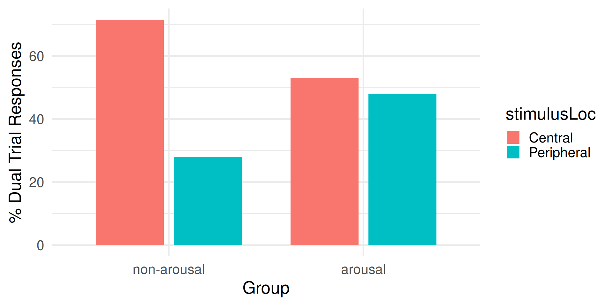
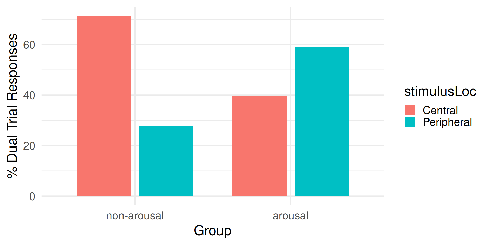
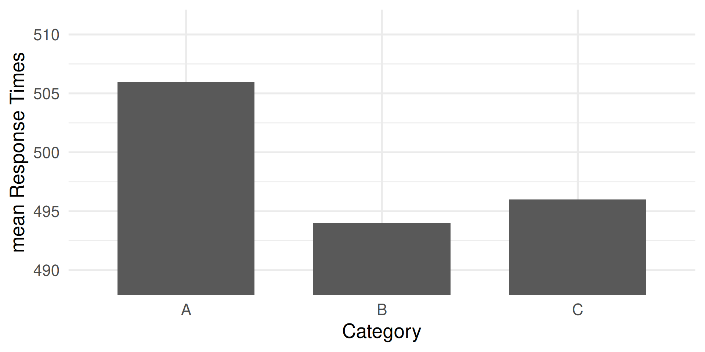
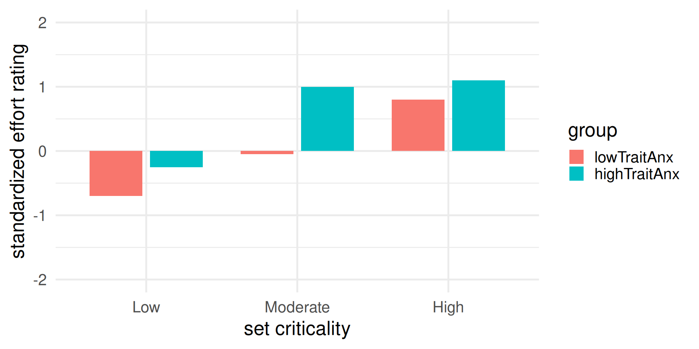
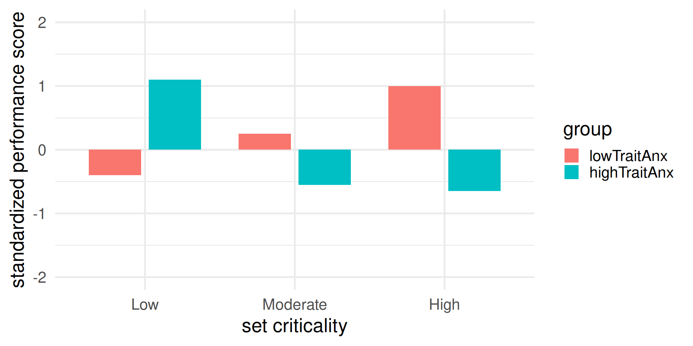
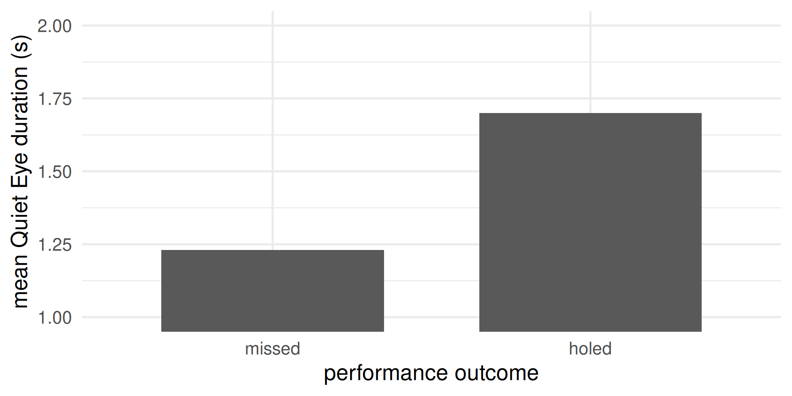
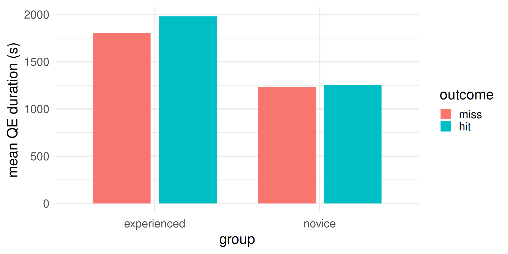

Attentional Control Theory
Stress and Performance
JXH-3042, JXC-3042
Lecturer in Psychophysiology and Cognitive Neuroscience
School of Psychology and Sport Science, Bangor University, UK
Web profile | Research publications | Software | Book a meeting
QR code to this slide deck
On a computer press F11 to de/activate full-screen view.
For smartphone and review: Bottom left menu > Tools > PDF Export Mode.
Part 1 of 2
Agenda
- Crash course on attention and working memory
- Effects of anxiety
- Processing Efficiency Theory
- Mixture of theory, empirical research, and intuition
Crash course on working memory
We will review these features in turn.
Working memory has limited capacity (feature #1)
Think of working memory as the set of resources for temporarily holding and manipulating information.
Analogy used often: a working desk. There is enough space for the things you are working on right now, not much else…

Desk analogy
The white rectangle is the desk, representing how much working memory is being used at this moment. Currently: unlikely/impossible situation where nothing is taking space in working memory
Desk analogy
Most of the times (or always) something occupies space on the desk: the things that are in the working memory. Sometimes one has enough working memory capacity spare to do well whatever it is that one is doing.
Desk analogy
Other times, there’s too much in working memory and the system fails due to overload (running out of cognitive resources). Whatever one is doing is going to suffer in quality.
Measuring working memory capacity: span
Classic span tasks measure primarily (short-term) storage capacity: participants hear or see sequences of items (digits, letters, words) and must recall them in order. Span is the maximum number of items a person can correctly repeat, often reported to be around 7 +- 2.
These tasks involve only two main relatively-simple processes: encoding and recall.
Optional: Link to demo of digit span task
Working memory’s multiple components (feature #2)
 Alan Baddeley
Alan Baddeley
Three different components handle storage of information (e.g., visuo-spatial, verbal-phonological) or manage access to that information.
House windows exercise
Helpful to realize how the three components work together.
Take a couple of minutes to Work out how many windows are there in your house
You retreive from long-term memory and manipulate a mental image of your house as you “walk through” it room by room (visuospatial sketchpad)
As you progress, you keep a count of the number of windows by rehearsing the numbers out loud or not. (phonological loop)
You will have followed a strategy: deciding which rooms to visualize next, keeping track of progress, and ensuring the count is updated (central executive).
Combining the two features: Measuring component-specific capacity
Phonological/Verbal Working Memory:
- Digit Span: Recall sequences of digits in order
- Letter Span: Recall sequences of letters in order
- Word Span: Recall sequences of words in order
Visuospatial Working Memory:
- Corsi Block Tapping Test: Recall sequences of spatial locations. Optional: link to Corsi span test
- Visual Patterns Test: Recall patterns in a grid
Optional: Complex span tasks
Classic span tasks = measure how much you can hold.
Complex span tasks = measure how well you can hold information while doing something else.
They require to:
- resist interference from additioanl processing task
- keep the memory items active
Compared to classic span tasks, better association with higher-order cognition (executive functions)
Example: link to the operation span task
Attention
Working memory’s limited capacity (feature #1) implies that one can’t process all information at once. One needs to select… and that’s one of the things attention does
Orienting of attention: endo- vs exo-genous
Endogenous
- “endo” = from the inside
- voluntary, intentional
- determined by the person
- top-down
- goal-directed
Exogenous
- “exo” = from the outside
- involuntary, not intentional
- determined by the environment
- bottom-up
- stimulus-driven
“Cocktail party” scenario: demonstrating goal-directed (endogenous) and stimulus-driven (exogenous) attentional orienting

Designed to illustrate selective feature of attention at the preconscious level, but here merely a shortcut for me to illustrate goal-directed and stimulus-driven attention at play.
You are in a noisy place. You choose to attend to one speaker (goal-directed). Suddenly, your attention is captured (distracted) by a salient, personally relevant cue (like hearing your name from your back) (stimulus-driven).
Important: the extent of attentional control can be defined as the balance between goal-directed (concentration) and stimulus-driven (distraction) attention
Orienting of attention: overt vs covert
Overt
- observable orienting movement of sense organs/body
- attention shifts with sensor orientation (eyes, head/ears, posture)
- typically detectable by others
- examples:
- visual: turning eyes/head to look at a clock
- auditory: turning your head or cupping your ear toward a speaker
- tactile/proprioceptive: moving a finger to explore a texture
Covert
- internal shift of focus without observable movement
- attention shifts without changing sensor orientation
- typically not detectable by others
- examples:
- visual: keeping eyes fixed but monitoring something in peripheral vision
- auditory: keeping head still but following a conversation behind you
- tactile/proprioceptive: keeping the hand still but focusing on the pressure of a ring
Demonstrating overt vs covert
While fixating the cross at the centre, try to read what appears at the sides
COVERT + ORIENTING
You just experienced covert orienting
Types of attentional orienting: a 2 x 2 framework
Goal-directed orienting can happen overtly or covertly. Stimulus-driven orienting can also happen overtly or covertly.
Examples
| Overt | Covert | |
|---|---|---|
| Goal-directed | Deliberately turning your head to look and focus where your team-mate will pass | While dribbling look to your right but mentally tracking your team-mate running to your left |
| Stimulus-driven | In a tennis tournament, someone in the crowd shouts your name | A motorbike racer keeps their eyes locked on the track at a difficult turn but their attention is automatically pulled to a crash happening in their peripheral vision |
What does anxiety do to attentional control?

Shapiro & Johnson (1987)
Study 1, key methodology
- N = 30 University students
- Task: Use one hand to classify central and peripheral target stimuli (perceptually difficult because the target stimuli were presented for a short duration)
- Participants needed to keep their eyes on a central fixation cross. A target stimulus could appear either centrally or in the periphery … or both: dual trial (i.e., two targets at the same time)
- Groups: arousal, non-arousal
- The other hand was for receiving electrical shocks every now and then, but only the lucky ones in the arousal group.
- Analyses: the researchers were interested in the participants’ choices in the dual trials.
Study 1, main results

For the non-arousal group, dominance of central stimulus
For the arousal group, no dominance. Arousal countered the dominance of the central stimulus.
Shapiro & Johnson (1987)
Study 2, key idea
They realized the central stimulus was more predictable (only one location) than the peripheral stimulus. In study 2, they used the same Method, but made the central location less predictable than in study 1.
Study 2, main results

Arousal reversed the dominance, so that when a pair of central-peripheral targets were presented, the peripheral target became the dominant.
Lipp & Derakshan (2005)
Key methodology:
- N = 70 participants
- Groups:
- Spider/snake phobics
- non-phobics
- Task: emotional dot probe
- Emotional Dot probe: a cue appears on the screen either left or right before a target stimulus appears either left or right. The cue could be neutral or emotional (image of a snake).
Main results:
- The target was detected faster when appearing shortly after an emotional cue
- Larger effects for phobics
Lautenbach et al. (2016)
Key methodology:
- N = 40 athletes
- Task: emotional Stroop task
- A: negative sport related words (e.g., defeat, failure, rival)
- B: neutral sport related words (e.g., endurance, position, sideline)
- C: neutral non-sport related words (e.g., radio, lemon, computer)
Main results:

Significantly slower when responding to negative sport-related words.
Summary of effects of anxiety on attention: Attentional Bias
Anxiety induces an attentional bias, consisting of enhanced processing of threats:
- early detection of threats
- impaired disengagement from threats
(whatever threat means to the individual).
Good or bad? Neither. From an evolutionary perspective, anxiety is an adaptive process that increase chances of survival. But thinking about threats might not always be the most functional way to use one’s working memory resources.
Processing Efficiency Theory (PET)
There are plenty of resources (white) to complete an easy task (yellow). Performance is good.
Processing Efficiency Theory (PET)
Resources dedicated to worry (blue) are not dedicated to process task-related information. But there are plenty resources for both. Performance is good.
Processing Efficiency Theory (PET)
If worry takes more resources (i.e., one experiences greater cognitive anxiety), while still leaving enough for the easy task, there is still space for both. Performance is still not impaired.
Processing Efficiency Theory (PET)
But if the task is more difficult requiring more resources, and if there are none left, performance will be impaired.
Performance is impared if there are not enough resources to carry out the task. Worry is a distraction that takes resources away from the task
Processing Efficiency Theory (PET)
However, working memory capacity can temporary increase, through effort mobilization. There are now enough resources for both the worry and the task. Performance is good. However, the fact that extra resources were mobilized means decreased efficiency.
Processing Efficiency Theory (PET)
In fact, even a task so difficult could have been carried out well in a more efficient manner (i.e., without the extra effort) if worry did not occupy so much of working memory.
Processing Efficiency Theory (PET)
The effects of worry (cognitive anxiety) are best studied not on performance, but on processing efficiency.
Note
Optional: my interpretation \[ \text{efficiency} \propto \frac{\text{performance}}{\text{resources}} \]
The formula is a short version of “how much you do in relation with how much effort you put tells about efficiency”. The symbol \(\propto\) means “is proportional to”.
Smith et al. (2001)
Key methodology:
- N = 12 volleyball players
- 6 low and 6 high in trait anxiety
- Task: Eigth volleyball games
- Measures:
- State anxiety (through questionnaire)
- Effort mobilized (through questionnaire)
- Performance (through video analyses)
- Analysis factors
- Group (low, high trait anxiety)
- set criticality
- low: 7 or more points of difference
- moderate: between 3 and 6 points of difference
- high: less than 2 points of difference
Predictions:
- State anxiety would be greater for more critical sets
- Effort would also be greater for more critical sets
- Performance would increase when more effort is mobilized
- but only for the low-trait anxiety group
Main results:
- High-trait anxiety groups experienced greater state anxiety

- Effort increased with set criticality

- Performance improved with set criticality for the low-trait anxiety group
- Performance declined with set criticality for the high-trait anxiety group
Interpretation: Performance and worry competed for resources. As worry (state anxiety) increased over set criticality, fewer and fewer resources were left to focus on the volleyball task. Some support for Processing Efficiency Theory
Visuospatial attention in target sports: the quiet eye
 Joan Vickers
Joan Vickers
“Quiet Eye” as much a phenomenon as a variable.
As a variable
- The QE is a duration of time, units of (milli)seconds
- Eyes on the critical location or object (e.g., ball in golf putting)
- It starts before movement initiation (“QE onset”)
- It ends when the gaze deviates from the location or object of a certain amount (“QE offset”)
As a phenomenon
Extensive reports in literature that:
- experts have a longer QE than novices
- QE is longer for successful than unsuccessful performance
- it is trainable
Mechanisms / What happens during the QE that is beneficial to performance?
- Visual processing
- Postural-kinematic quiescence
- a few others…
Wilson & Pearcy (2009)
Key methodology:
- N = 6 participants
- Task: Golf putting on flat and sloped surfaces
- Measure:
- Performance
- Quiet Eye duration via eye tracking
Key result:

Significantly longer QE durations ahead of holed than missed putts.
Walters-Symons, Wilson, & Vine (2017)
Key methodology
- N = 18 experienced golfers
- N = 21 novice golfers
- Task: flat-surface golf putting
Key result

- Experienced golfers showed longer QE durations than novices
Wilson et al. (2006)
Key methodology:
- N = 24 university students
- Median split into low and high trait anxiety
- Task: simulated rally driving, under two conditions
- practice (designed to induce lower state anxiety)
- competition (designed to induce higher state anxiety)
- Measures:
- Trait and state anxiety (through questionnaires)
- Effort mobilized (through questionnaire)
- Performance (time to complete the race)
- Effort
- through questionnaire
- pupil diameter (larger pupil = more effort)
Main results:
for both groups, state anxiety increased from practice to competition.
the high-trait anxiety group showed greater state anxiety.
Pupil diameter increased from practice to competition for both groups, being also larger for high-trait anxiety group
Self-report effort showed similar results, with the practice-to-competition increase much larger in the high-trait anxiety group.
No group difference in performance during practice
Performance decreased from practice to competition
Performance drop was larger for the high-trait anxiety group
Interpretation:
There were enough spare resources in working memory to complete the driving task when worry (state anxiety) used a small amount of resources.
Worry (state anxiety) occupied more resources in competition, especially for the high-trait anxiety group.
The high-trait anxiety group mobilized more resources, increasing their working memory, but the extra resources were not enough to maintain as good performance.
These findings support Processing Efficiency Theory
Part 2 of 2
Very brief recap of Processing Efficiency Theory
People who experience greater cognitive anxiety (worry) perform worse than those who experience less. But this is not always the case… why?
Additional, optional material
Performing and choking under pressure
Sports Science Shorts: Choking under pressure Q&A
Interview with Denise Hill, choking under pressure
Interview with Sam Vine, Quiet Eye, Pressure, VR training
Choking under pressure revisited: critiques
Choking under pressure revisited: integrative theories